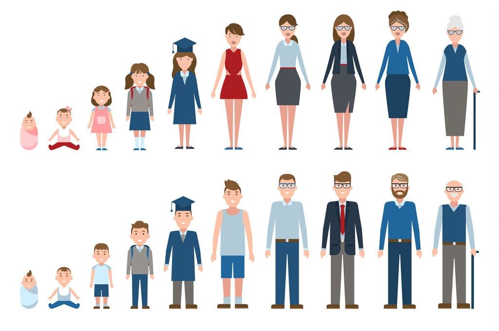
1. В каком возрасте человек переживает пубертатный период – период полового созревания?
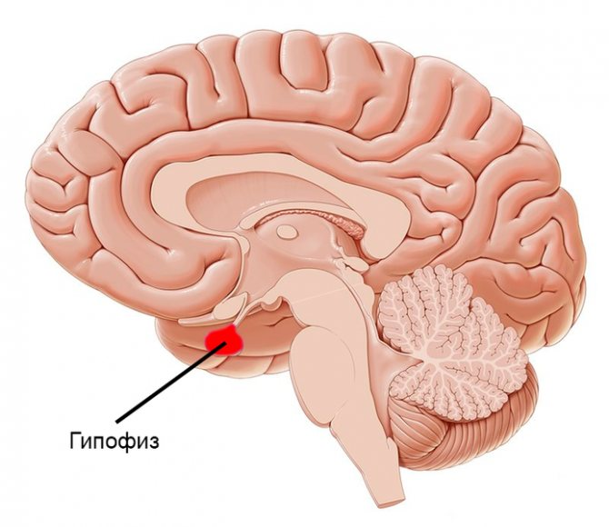
2. На что влияет активное выделение гормона гипофиза?
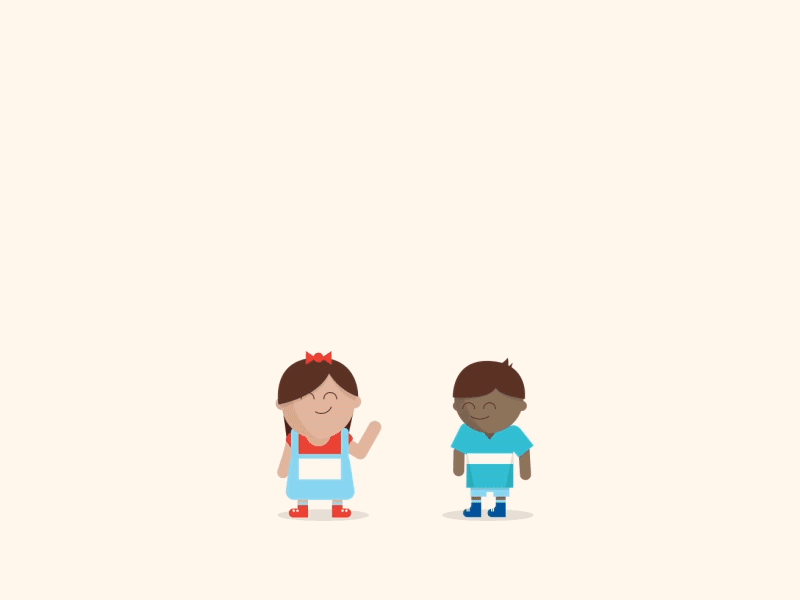
3. У кого половое созревание начинается раньше?
4. Какой компонент НЕ является составляющей частью телосложения?
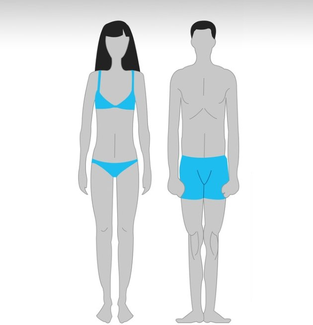
5. Что НЕ свойственно астеноидному типу телосложения?
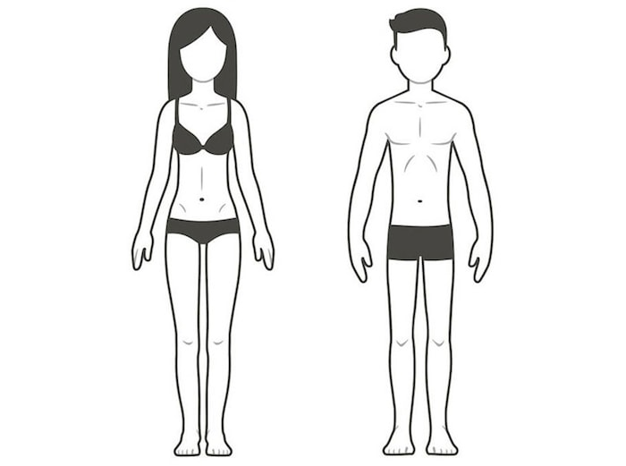
6. Что НЕ свойственно торакальному типу телосложения?
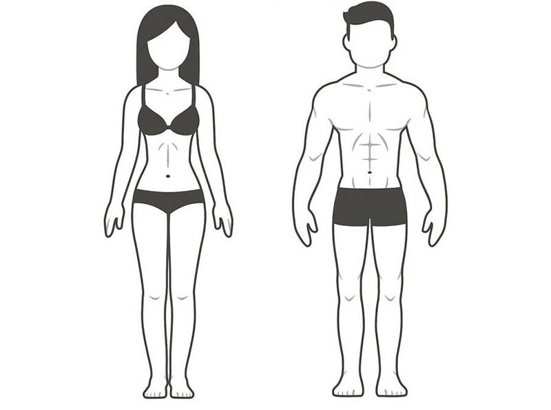
7. Что НЕ свойственно мышечному типу телосложения?
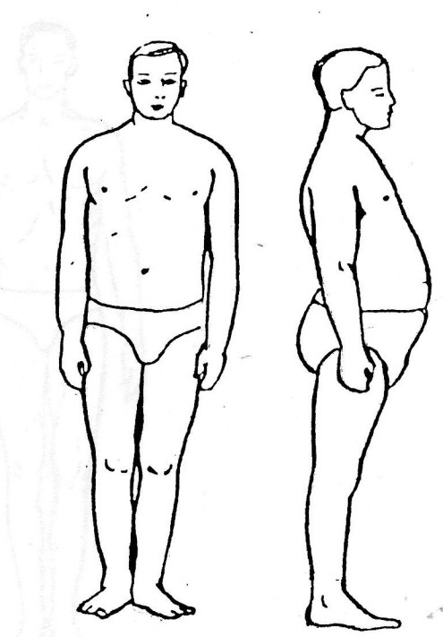
8. Что НЕ свойственно дигестивному типу телосложения?
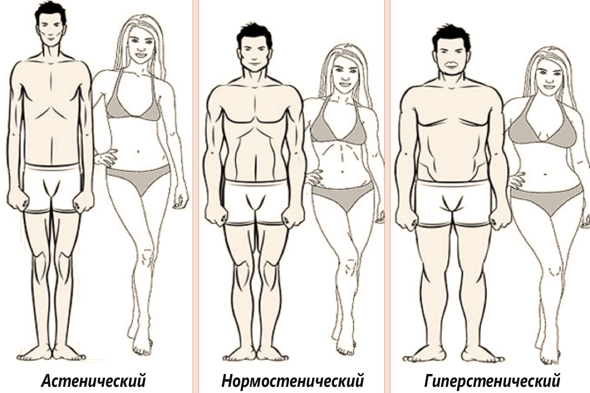
9. Что больше всего влияет на формирование телосложения?
10. Какие физические упражнения наиболее полезны для астеников?
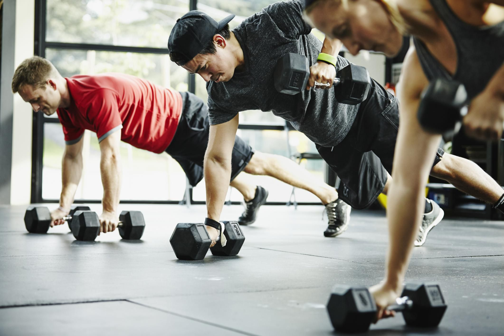
11. Какие физические упражнения наиболее полезны для подростков дигестивного соматотипа?
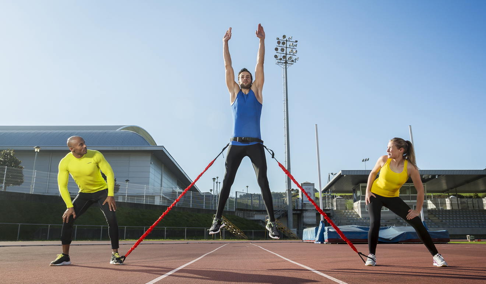
12. Какие физические упражнения наиболее полезны для подростков торакального и мышечного типов?
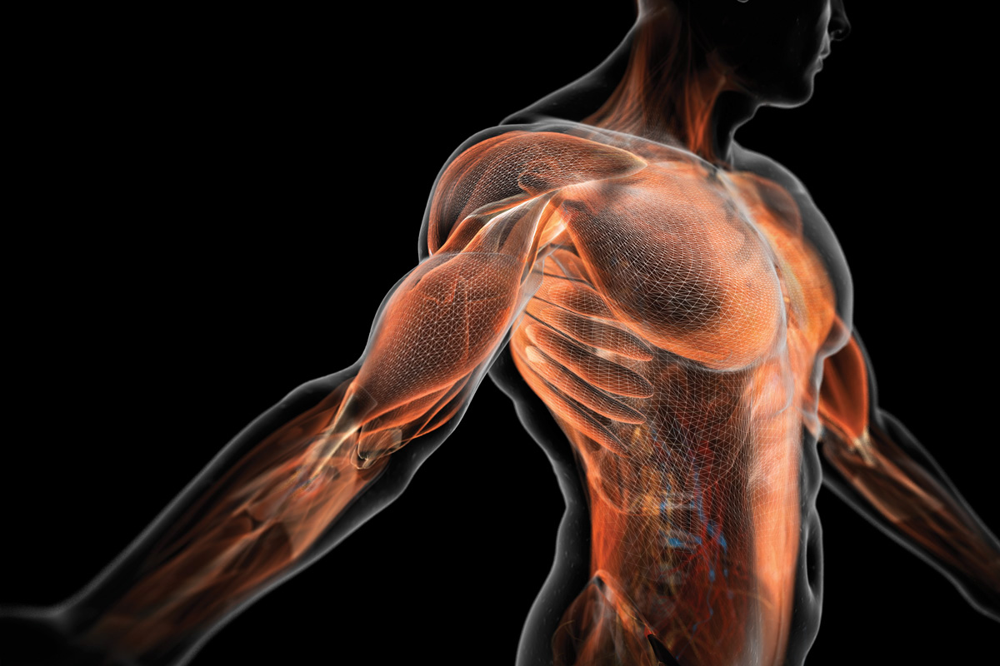
13. В каком возрасте пубертатного периода развитие мышц достигает апогея?
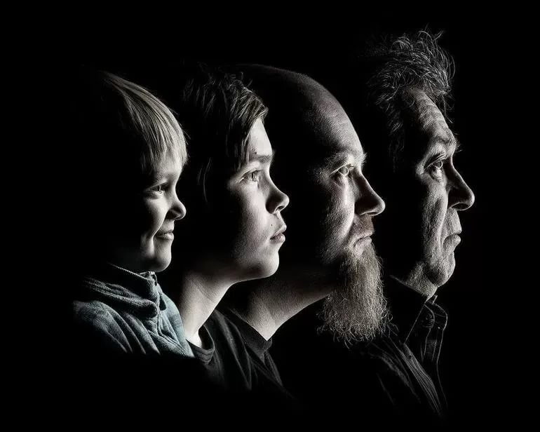
14. Биологический возраст – это…
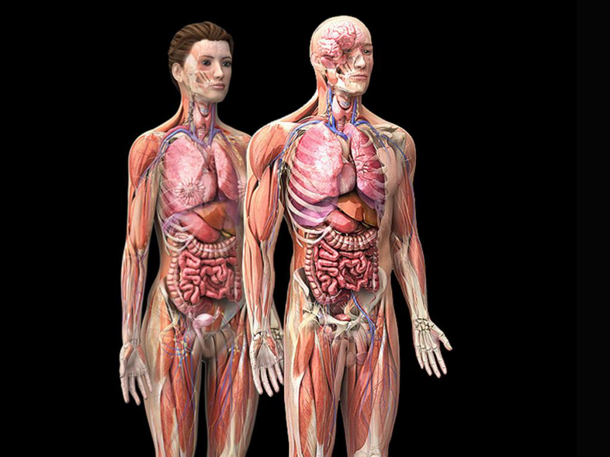
15. Общие энергозатраты всего организма связаны с увеличением массы тела и прежде всего…